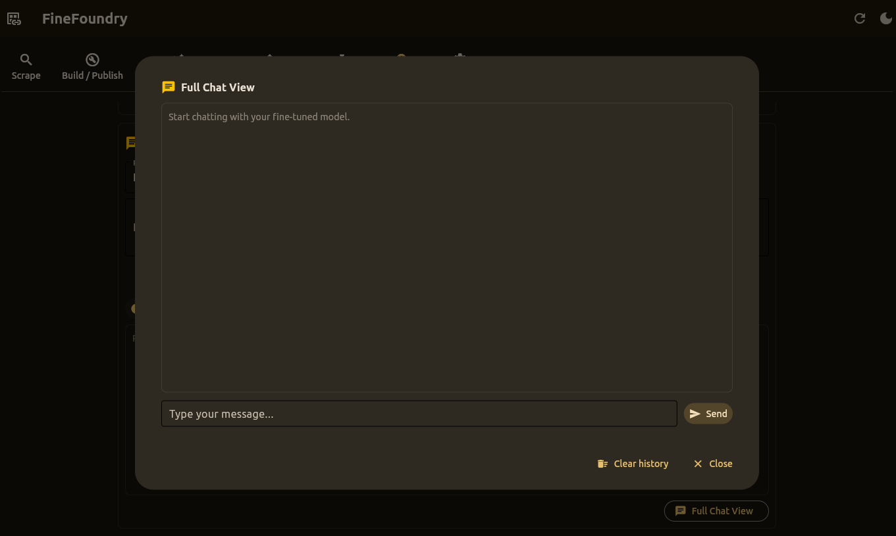

Quick Start Guide
Get from cloned repo to a running desktop app and your first dataset in minutes.
Prerequisites
- Python 3.10+ (Windows, macOS, or Linux)
- Git (optional, for cloning)
- uv (recommended) or pip for package management
Optional for publishing:
- Hugging Face account with an access token
Option 1: Using uv (Recommended)
# Clone the repository
git clone https://github.com/SourceBox-LLC/FineFoundry.git FineFoundry-Core
cd FineFoundry-Core
# Install uv if needed
pip install uv
# Run the application (uv handles dependencies automatically)
uv run src/main.pyOption 2: Using pip
# Clone the repository
git clone https://github.com/SourceBox-LLC/FineFoundry.git FineFoundry-Core
cd FineFoundry-Core
# Create and activate virtual environment
python -m venv venv
# Windows (PowerShell)
./venv/Scripts/Activate.ps1
# macOS/Linux
source venv/bin/activate
# Install dependencies
pip install -r requirements.txt
# Run the application
python src/main.pyFirst Launch
When you launch FineFoundry, you'll see a desktop application with these tabs:
- Scrape – Collect training data from 4chan, Reddit, or Stack Exchange
- Build / Publish – Create datasets and publish to Hugging Face
- Training – Fine-tune models on RunPod or locally via Docker
- Inference – Run inference against fine-tuned adapters
- Merge Datasets – Combine multiple datasets
- Dataset Analysis – Analyze dataset quality
- Settings – Configure authentication and preferences
Your First Dataset
Step 1: Scrape Data
- Navigate to the Scrape tab
- Select a few boards (e.g.,
pol,b,x) - Configure parameters:
- Max Threads: 50
- Max Pairs: 500
- Delay: 0.5 seconds
- Min Length: 10 characters
- Click Start Scrape
- When complete, click Preview Dataset
Step 2: Build & Publish (Optional)
- Navigate to the Build / Publish tab
- Configure split ratios with sliders
- Click Build Dataset
- To publish: enable Push to Hub, set Repo ID, and click Push + Upload README
Installation
Detailed installation instructions for all platforms.
System Requirements
- OS: Windows 10+, macOS 11+, or Linux (Ubuntu 20.04+)
- Python: 3.10 or higher
- RAM: 8GB minimum, 16GB+ recommended for training
- GPU: Optional but recommended for local training (NVIDIA with CUDA support)
Installing uv
uv is a fast Python package manager that handles dependencies automatically:
# Install uv
pip install uv
# Verify installation
uv --versionVerifying Installation
# Check Python version
python --version # Should be 3.10+
# Run FineFoundry
uv run src/main.py.venv folder and running uv run src/main.py again. uv will recreate the environment with fresh dependencies.
Scrape Tab
Collect conversational training data from multiple sources and prepare it as input/output pairs.

Supported Sources
Multi-board scraping with quote-chain and cumulative pairing modes
Subreddits or single posts with parent-child threading
Q&A pairs from accepted answers
Generate Q&A, CoT, or summaries from PDFs/docs using local LLMs
Parameters
- Max Threads – Number of threads per board to sample
- Max Pairs – Upper bound on input/output pairs to extract
- Delay (s) – Polite delay between HTTP requests
- Min Length – Minimum character count per side
- Mode –
normal(adjacent posts) orcontextual - Strategy (contextual only) –
quote_chain,cumulative, orlast_k - K – Context depth for contextual mode
- Max Input Chars – Optional truncation of long contexts
Pairing Modes
Normal Mode
Creates pairs from adjacent posts. Simple and fast, but loses conversational context.
Contextual Mode
Builds context from the conversation thread:
- quote_chain – Follows reply chains via quote references
- cumulative – Accumulates all previous posts as context
- last_k – Uses the last K posts as context
Output Format
[
{"input": "What do you think about...", "output": "I believe that..."},
{"input": "Can you explain...", "output": "Sure, here's how..."}
]Synthetic Data Generation
Generate training data from your own documents using local LLMs powered by Unsloth's SyntheticDataKit.
Supported Input Formats
- PDF documents
- DOCX (Word documents)
- PPTX (PowerPoint)
- HTML/HTM web pages
- TXT plain text
- URLs (fetched and parsed)
Generation Types
- qa – Question-answer pairs from document content
- cot – Chain-of-thought reasoning examples
- summary – Document summaries
Synthetic Parameters
- Model – Local LLM to use (default:
unsloth/Llama-3.2-3B-Instruct) - Generation Type – qa, cot, or summary
- Num Pairs – Target examples per chunk
- Max Chunks – Maximum document chunks to process
- Curate – Enable quality filtering with threshold
Build & Publish Tab
Convert raw JSON data into structured Hugging Face datasets and optionally push to the Hub.

Workflow
- Select a Data file (JSON) from scraping
- Configure split ratios (train/validation/test)
- Set shuffle and seed for reproducibility
- Click Build Dataset
- Optionally enable Push to Hub and publish
Split Configuration
- Seed – Controls shuffling deterministically
- Shuffle – Whether to shuffle before splitting
- Validation % – Fraction for validation set
- Test % – Fraction for test set (remainder becomes train)
- Min Length – Minimum characters for input/output
Hub Integration
- Repo ID – e.g.,
username/my-dataset - Private – Create a private repository
- HF Token – Your Hugging Face access token
The Push + Upload README button uploads your dataset with an auto-generated dataset card.
Example: Local Splits Only
- Set Data file to
scraped_training_data.json - Set Validation to
0.05, Test to0.0 - Enable Shuffle, set Seed to
42 - Set Save dir to
hf_dataset - Click Build Dataset
Training Tab
Fine-tune language models using an Unsloth-based LoRA training stack on RunPod or locally via Docker.

Training Targets
Cloud GPU training with automated pod and network volume management
Train on your local GPU using the same Unsloth trainer image
Under the Hood
Both targets use docker.io/sbussiso/unsloth-trainer:latest with:
- PyTorch – Accelerated training on CPU/GPU
- Hugging Face Transformers – Model loading and tokenization
- bitsandbytes – 4-bit quantization for memory efficiency
- PEFT / LoRA – Parameter-efficient fine-tuning via Unsloth
Skill Levels
Beginner Mode
Simplifies choices with safe presets:
- Fastest (RunPod) – Higher throughput on stronger GPUs
- Cheapest (RunPod) – Conservative params for smaller GPUs
- Quick local test – Short run for sanity checks
- Auto Set (local) – Detects GPU VRAM and sets optimal params
Expert Mode
Full control over all hyperparameters for experienced users.
Hyperparameters
- Base model – Default:
unsloth/Meta-Llama-3.1-8B-Instruct-bnb-4bit - Epochs – Number of training epochs
- Learning rate – Step size for optimization
- Batch size – Samples per device per step
- Gradient accumulation – Steps before weight update
- Max steps – Upper bound on training steps
- Packing – Pack multiple short examples for throughput
- Auto-resume – Continue from latest checkpoint
Quick Local Inference
After a successful local run, the Quick Local Inference panel appears:
- Enter a prompt and click Run Inference
- Choose presets: Deterministic, Balanced, or Creative
- Adjust temperature and max tokens with sliders
- View prompt/response history
Saving Configurations
Training configs are saved as JSON files under src/saved_configs/:
- Click Save current setup to snapshot your configuration
- Use the dropdown to load saved configs
- The last used config auto-loads on startup
Inference Tab
Run local inference against fine-tuned adapters with prompt history and Full Chat View.

Features
- Adapter Selection – Point to any LoRA adapter directory on disk
- Instant Validation – Verifies adapter files before loading
- Generation Presets – Deterministic, Balanced, Creative, or Custom
- Full Chat View – Multi-turn conversation dialog
- Prompt History – Scroll through previous prompts and responses
Adapter Validation
When you select an adapter directory, FineFoundry:
- Shows a loading spinner while checking the folder
- Verifies the directory contains LoRA artifacts (
adapter_config.json, weight files) - If valid: unlocks the Prompt & Responses section
- If invalid: shows an error and locks the controls
Generation Controls
- Preset dropdown – Quick settings for different use cases
- Temperature slider – Controls randomness (0.0 = deterministic)
- Max new tokens slider – Upper bound on generated tokens
Full Chat View
Click Full Chat View to open a focused chat dialog:
- Large chat area with user/assistant bubbles
- Multiline message composer
- Shared conversation history with main view
- Clear history and close buttons
Under the Hood
Powered by the same stack as training:
- Transformers –
AutoModelForCausalLM,AutoTokenizer - PEFT –
PeftModelfor adapter loading - bitsandbytes – 4-bit quantization on CUDA
- 100% local – No external API calls
Merge Datasets Tab
Combine multiple datasets from different sources into a unified training set.

Use Cases
- Combining data from multiple scraping sessions
- Merging Hugging Face datasets with local JSON files
- Creating larger, more diverse training datasets
Operations
- Concatenate – Stack all datasets sequentially
- Interleave – Alternate records for better distribution
Supported Sources
- Hugging Face – Load from Hub with repo, split, and config
- JSON file – Load from local JSON files
Column Mapping
FineFoundry automatically handles column mapping:
- Auto-detects common patterns:
input/output,prompt/response,question/answer - Normalizes all datasets to
input/outputformat - Filters rows with empty input or output
Output Formats
- JSON file – Simple, portable format for smaller datasets
- HF dataset dir – Memory-efficient for large datasets (100k+ records)
Download Merged Dataset
After a successful merge, click Download Merged Dataset to copy the result to another location.
Dataset Analysis Tab
Interactive insights into your datasets to assess quality before training.

Analysis Modules
- Basic Stats – Record counts, mean lengths
- Duplicates & Similarity – Approximate duplicate rate
- Sentiment – Polarity distribution
- Class Balance – Short/medium/long buckets
- Data Leakage – Train/test overlap detection
- Toxicity – Harmful content detection
- Readability – Text complexity metrics
- Topics – Topic distribution analysis
Workflow
- Select dataset source (JSON or Hugging Face)
- Enable the analysis modules you need
- Click Analyze Dataset
- Review summary stats and visualizations
Settings Tab
Centralized configuration for authentication, proxies, and integrations.
Hugging Face Settings
- HF Token – Paste your access token with read/write permissions
- Test – Verify connectivity to Hugging Face
- Save / Remove – Persist or clear the token
RunPod Settings
- API Key – Your RunPod API key
- Test – Verify the key works
- Save / Remove – Persist or clear the key
Proxy Settings
- Enable proxy – Toggle proxy usage for scrapers
- Use env proxies – Use system environment variables
- Proxy URL – e.g.,
socks5h://127.0.0.1:9050for Tor
Ollama Settings (Optional)
- Enable Ollama – Toggle Ollama integration
- Base URL – e.g.,
http://localhost:11434 - Default model – Model to use for dataset card generation
finefoundry.db) and never sent to external servers.
Data Storage
FineFoundry uses SQLite for unified data storage:
- Settings – HF token, RunPod API key, Ollama config, proxy
- Training Configs – Saved hyperparameter configurations
- Scrape Sessions – History of all scrape runs
- Scraped Pairs – All input/output pairs from scraping
The database is auto-created on first run. Existing JSON files are automatically migrated.
CLI Tools
Command-line tools for automation and scripting.
Dataset Build & Push
Use src/save_dataset.py to build and push datasets:
# Configure constants in the file header, then run:
uv run src/save_dataset.pyConfiguration options in the file:
DATA_FILE = "scraped_training_data.json"
SAVE_DIR = "hf_dataset"
SEED = 42
SHUFFLE = True
VAL_SIZE = 0.01
TEST_SIZE = 0.0
MIN_LEN = 1
PUSH_TO_HUB = True
REPO_ID = "username/my-dataset"
PRIVATE = True
HF_TOKEN = None # uses env HF_TOKEN if NoneReddit Scraper CLI
uv run src/scrapers/reddit_scraper.py \
--url https://www.reddit.com/r/AskReddit/ \
--max-posts 50 \
--mode contextual \
--k 4 \
--max-input-chars 2000 \
--pairs-path reddit_pairs.json \
--cleanupImportant Options
--url– Subreddit or post URL to crawl--max-posts– Maximum posts to process--mode–parent_childorcontextual--k– Context depth for contextual mode--pairs-path– Output path for pairs JSON--cleanup– Delete dump folder after copying pairs
When to Use CLI vs GUI
Use GUI for interactive exploration, visual feedback, and managing training runs.
Use CLI for scheduled jobs, CI integration, and reproducible configurations.
Python API
Use FineFoundry programmatically in your own scripts.
4chan Scraper
from src.scrapers.fourchan_scraper import scrape
pairs = scrape(
board="pol",
max_threads=150,
max_pairs=5000,
mode="contextual",
strategy="cumulative"
)
# pairs is a list of {"input": ..., "output": ...} dictsDataset Builder
from src.helpers.dataset_builder import build_dataset
dataset = build_dataset(
data_file="scraped_training_data.json",
val_size=0.05,
test_size=0.05,
shuffle=True,
seed=42
)
# dataset is a datasets.DatasetDict with train/val/test splitsLocal Inference
from src.helpers.local_inference import generate_response
response = generate_response(
prompt="What is machine learning?",
adapter_path="/path/to/adapter",
base_model="unsloth/Meta-Llama-3.1-8B-Instruct-bnb-4bit",
temperature=0.7,
max_new_tokens=256
)Docker Deployment
Run local training jobs using Docker containers.
Overview
FineFoundry uses Docker for local training from the Training tab:
- Training jobs run inside a Docker container
- A host directory is mounted to
/datain the container - Checkpoints and outputs are written to that directory
Default Trainer Image
docker.io/sbussiso/unsloth-trainer:latestThis image includes:
- PyTorch with CUDA support
- Hugging Face Transformers
- bitsandbytes for 4-bit quantization
- PEFT / LoRA via Unsloth
GPU Access
For GPU training, ensure:
- NVIDIA drivers are installed
- Docker is configured with NVIDIA runtime
- Use GPU is enabled in the Training tab
Running the GUI
The GUI is designed to run on your local machine, not in a container:
# Run the GUI locally
uv run src/main.py
# Training jobs are offloaded to Docker containersRunPod Setup
Run training jobs on remote GPUs using RunPod.
How It Works
When you select RunPod – Pod as the training target:
- FineFoundry connects using your RunPod API key
- Ensures a Network Volume exists (mounted at
/data) - Ensures a Pod Template exists for your hardware
- Launches pods to run training jobs
- Writes outputs to
/data/outputs/...on the network volume
Prerequisites
- RunPod account with billing/credits
- RunPod API key (configure in Settings tab)
- Available GPU type in your desired region
Step 1: Configure API Key
- Open the Settings tab
- Paste your API key in RunPod Settings
- Click Test to verify, then Save
Step 2: Create Network Volume
In the RunPod console:
- Create a Network Volume (size depends on your needs)
- Note the volume identifier
- In FineFoundry, use Ensure Infrastructure to verify
Step 3: Create Pod Template
Create a template that:
- Uses
docker.io/sbussiso/unsloth-trainer:latest - Mounts the Network Volume at
/data - Has your desired GPU/CPU/RAM resources
Step 4: Launch Training
- Set Training target to RunPod – Pod
- Configure dataset and hyperparameters
- Set Output dir under
/data/outputs/... - Start the training job
Troubleshooting
Common issues and solutions.
Installation Issues
Python version mismatch
FineFoundry requires Python 3.10+. Check your version:
python --versionDependency conflicts
Delete the virtual environment and let uv recreate it:
rm -rf .venv
uv run src/main.pyTraining Issues
CUDA Out of Memory (OOM)
- Reduce batch size
- Increase gradient accumulation
- Use a smaller base model
- Enable packing for short examples
Exit code 137
The container was killed due to memory limits. Reduce batch size or use a machine with more RAM.
Authentication Issues
Hugging Face token not working
- Verify the token has write permissions
- Use the Test button in Settings
- Try setting
HF_TOKENenvironment variable
RunPod API key issues
- Verify the key in the RunPod console
- Check that billing/credits are set up
- Use the Test button in Settings
Inference Issues
Adapter validation fails
- Point to the adapter subfolder, not the parent run directory
- Verify the folder contains
adapter_config.json - Check for weight files (
*.safetensorsor*.bin)
Getting Help
- GitHub Issues: Report bugs
- GitHub Discussions: Ask questions